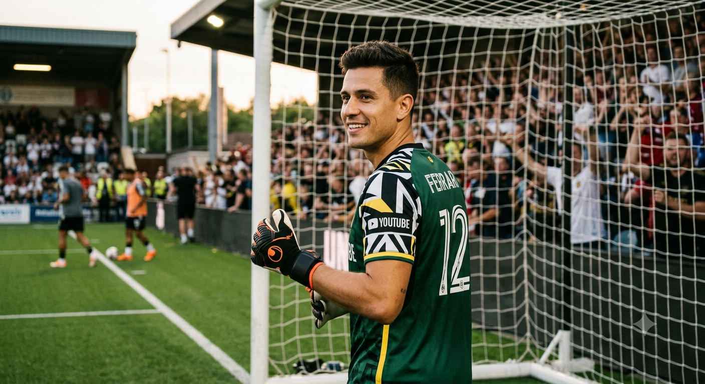

Fundamentos
Por: João Vitor de Almeida Iaros
O posicionamento da mão para encaixar a bola, é realizar um triangulo com as mãos.O segundo passo, é ensinar a saltar encaixando a bola, isso é chamado de ponte.
Vou compartilhar conhecimento de como ser um bom GOLEIRO

width: 80px; height: 80px;Por: João Vitor de Almeida Iaros
O posicionamento da mão para encaixar a bola, é realizar um triangulo com as mãos.O segundo passo, é ensinar a saltar encaixando a bola, isso é chamado de ponte.